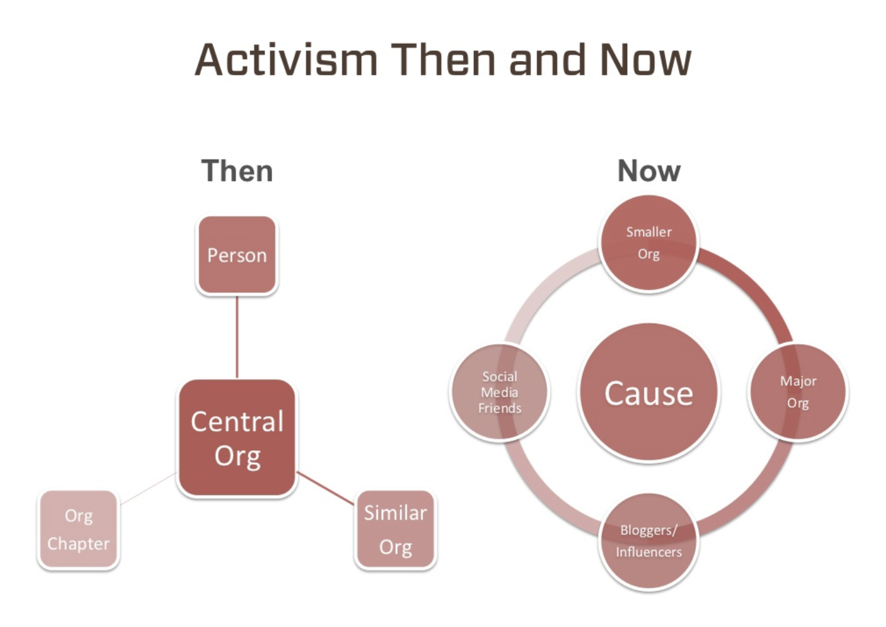

Below is a piece I published on the NESTA website in early 2016 which they took down in a web revamp. It's still available on archive.org, but I thought I'd also publish it here for the record.

Quick Troppo Quiz: Are there as many strategic diagrams on the web as there are molecules in the universe?There's a fascinating world of difference between social change seeking a generation ago compared with today. Then, political projects – around equal rights for women, employees and minorities, and greater respect for our environment – were largely about public policy and wider cultural norms. Accompanying this, ‘theory', political campaigning and raising awareness were at the heart of activism.
Today's change-seeking is different. The ultimate concerns are similar. Most change-seeking shares left-of-centre values, but today a lot of the focus is directly on the doing of good. Typical forms of the new activism include social entrepreneurialism, personal commitment to such things as ‘ethical’ consumption and investment, and its corporate analogue – corporate social responsibility and/or ‘shared value’, transparency (of governments and corporations), hacktivism and open data.
There’s a lot to like about this new world where the prizes go, not to those with the loudest, angriest voices, but to those who’ve done the most. Instead of asking kids what their take on Marx is (and following that whether they're Stalinists, Leninists, Trots or Maoists), and how many times they've been arrested, we ask: if you believe in these causes, what have you achieved for them?
Still, in some areas the absence of theory is debilitating. Here’s a simple example. The Slimehead is a delicious species of fish that became overfished following a 1970s US National Marine Fisheries Service program to promote it for eating – including changing its name to the more palatable “Orange Roughy”. Fishing it is now subject to quotas in most countries, though some argue that the quotas are too large. If you think the quotas are too large, what should you do?
Is it unethical to buy and eat Orange Roughy in these circumstances? Perhaps. But your abstinence won’t reduce Orange Roughy consumption. It’s not that your tiny contribution won’t have much effect. It won’t have any effect. The quota you don’t take up will be taken up by someone else. Indeed, your abstinence will subsidise them by lowering the price they pay. In this situation, simple theory tells us that the only private action that improves outcomes is through private (political) voice influencing public policy – to lower fish-catching quota.
Two areas close to my heart are open data and democratic renewal. I think we could do wonderful things by truly embracing the potential for all information to be a public good. We could build public-private digital partnerships in areas like genomics. And imagine how much we might contribute to productivity and job satisfaction if governments used their convening power to promote standards of reporting that encouraged firms to compete for employees by releasing their employee engagement data.
Yet, as I discovered attending the 2014 Open Knowledge Festival in Berlin, somehow the data activists aren’t excited by these ideas. They are, after all, fairly abstract. Two things seem to float their boat. First, data on pretty much anything they might build a cool app for. Second, those with more subversive intent campaign for things like 'extractive transparency' which, with their cool apps and volunteer forensic work, enables them to expose hitherto unknown corporate linkages, questionable dealing and wrongdoing of many kinds. Both activities are entirely worthwhile. But for me, they still miss some of the most important things about information and the new possibilities of the internet. I think the right kind of collective action could bring forth a whole new constellation of digital public goods.
I also got a snapshot of the prosecution of democratic renewal upon accepting Geoff Mulgan’s kind invitation for me to attend Nesta showcasing D-Cent (Decentralised Citizens Engagement Technologies) when I was recently in London. For what it’s worth, my own 'theory' of the ills of democracy is not comprehensive or elaborate. It’s based on two points made by Joseph Schumpeter in 1943 that have always struck me as fundamental, though I’d take them in a far more democratic direction than he took them!
- Affect and expression provide the motive force for politics – as (mostly) rational self-interest and calculation does in markets. It also interests us in collective wellbeing as well as our own.
- All social organisation of the slightest sophistication requires a division of labour. This requires delegation of authority which creates conflicts of interest between the parts and the whole.
Representative democracy manages these conflicts of interest with politicians' 'accountability' to the people in elections. And this accountability has been leaching its historic aspirations to civic virtue and morphing instead in the direction Schumpeter sketched – towards a political ‘market’ with citizens as the consumers and politicians the producers. And mediated as it is through the mainstream media (mass and social), democratic engagement is amplifying the affective nature of democracy at the expense of careful deliberation. And this opens up huge opportunities for vested interests to manipulate democratic politics.
Now while I liked all the projects that were showcased, none of the presenters told us what they thought were the major problems of democracy, or how their innovations tackled them. In place of that they seemed to apply a particular mindset – of human-centred design, transparency, user experience, and engagement – to politics. That might be worthwhile, and I particularly applaud the presenters’ efforts to engage disengaged and disadvantaged groups, and Indigo Trust’s transparency work to tackle corruption.
But while it’s a mainstay of digital commerce and social media, that is a routine part of the tool kit of the new change-seekers, lowering transactions costs on participatory digital platforms could exacerbate the worst features of what I call vox pop democracy, focusing political practitioners even more relentlessly on the instant infotainment cycle. Internet-enabled democratic engagement could see deliberation squeezed even further from the fabric of our politics. Yet this risk was given little attention.
My theory suggests at least two fronts on which to fight the democratic decline engulfing us. First, for representation, delegation and legitimation, I’d like to see far more weight placed upon the solution the Athenians introduced to fend off oligarchy – bodies of randomly selected citizens, able to deliberate and weigh expert evidence as occurs with juries in our law courts. Digital tools wouldn’t be central to such initiatives, though they could usefully help communication within standing citizens’ bodies over time and between them and the wider public.
And I suspect digital tools are absolutely instrumental in building what I've called the middleware of democracy, where we cultivate the skills of deliberation necessary to productive debate. Thus, a discussion site, YourView, helps identify and reward participants in democratic discussions that exhibit virtues of democratic deliberation, such as being able to debate positions whilst retaining the respect of those defending different views.
At the end of the evening, Geoff Mulgan sagely observed that the innovations we’d seen showed some promise, but we’d find out in a few years whether they’d affected major change. My guess is that, as worthwhile as many of them are, without a stronger sense of the key problems they’re tackling – and how they’re tackling them – we’re seeing change without theory. And change without theory offers us little hope of change we can believe in.
- See more at: https://www.nesta.org.uk/blog/change-without-theory-change-we-can-believe/#sthash.NVQ2tGZe.dpuf
Change without theory is simply waiting for theory to catch up with observed reality. (For example, Modern Monetary Theory is driving the world economy currently- whatever you think of It).
Game theory has some wonderful insights into the evolution of this type of remarkable global economic co-operation. While widely credited with advances in economics, game theory's generic role in avoiding catastrophic war, famine and even pandemics yields a great deal in the absence of latent and subsequent theories.
While going digital first may be the middleware of new democracy, the tectonic forces at currently play are primal, cultural "religions/narratives" based in the theories societies need to tell themselves in order to enable resilience
Very heavy Grant. It was all much simpler than I was thinking. Thanks for the clarification.
not sure I believe what you claim. As I understand it volunteering is roughly at the same level now for the last 50 years or so. That's direct do-gooding, practiced by many.
Most political activism I see now is exactly of the type you ascribe to the previous generation: loudly demanding others change behaviour with little more than symbolic changes in own behaviour, easily forgotten as new problems come along. Extinction rebellion on Saturday but lots of plastic wrappings on Sunday? Black lives matter on monday, but full support for suspending education and low-skilled jobs on Monday (which disproportionately hurts....)? I see just as much cheap hypocrisy now as before in political activism.
Even online its the same story. There was real volunteering already a generation ago, prominently involved in the world-wide-web (1990s), linux (1990s) and wikipedia (2001).
If anything, I feel there is more gratuitous virtue signalling now than before, hiding the opposite behaviour. Corporate social responsibility now is just a more invasive continuation of the mission statements of the previous generation, by the same companies that dodge taxes. At least companies used to pay their taxes and thus truly do something good for the population......
And in politics? And among public servants? Seeming over being, methinks.
Thanks Paul, but you're reading a moralistic intent and reading into my post that wasn't intended by me. In fact I'm sympathetic to your hostility to a lot of current virtue signalling, but that wasn't really the focus of the post either. I was arguing that there are qualitative differences between the two eras.
But if you're looking for similarities, they're there too.
ah, well I did read it to be your intent, such as your passage "a lot of the focus is directly on the doing of good." and "the prizes go, not to those with the loudest, angriest voices, but to those who’ve done the most.". My mind immediately went to old volunteers versus young virtue signalers who are quite loud and angry!
However, if what you meant was more the second part of your essay, which I read as saying the new idealists are much less interested in grand theories, then I tend to agree more. In general, very recogniseable ideologies are less popular it would seem. So Greta Thunberg might be angry and loud, but she is not telling world leaders to adopt the Gaia hypothesis. Is that what you meant?
I think the lesser interest in grand theories is actually due to email and social media which is now constantly interrupting our thought processes. It is gradually changing how the old generation thinks, and is raising the new generation to think differently. We seem to be going from thinking long thoughts to short thoughts. From long single trains of thought to a large collection of short ones. From stories to quotes.
Its a profound shift in thought processes that comes with greater reliance on group-think (we simply more heavily rely on the group to tell us what is right, wrong, and true about the world, adding small bits of stories ourselves here and there). It has also changed the nature of virtue signalling, from adhering to grand theory to adhering to slogans.